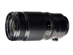
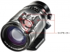
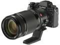
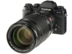

器材库 > APS画幅镜头 > XF 50-140/2.8 R LM OIS WR

详细规格
发布日期
2014-09-10
厂家推荐价格
9,800.00 （人民币）
焦距
50-140mm
等效35mm画幅焦距
76-213mm
最大光圈
F2.8-F2.8
最小光圈
F22-F22
镜头结构
23片/16组
低/超低色散镜片
6片
光圈叶片
7片
最近对焦距离
100cm
最大放大倍率
0.12倍
滤镜口径
72mm
镜头卡口
Fujifilm XF
防抖
是
颜色
黑色
尺寸
82.9x175.9mm
重量
995g
一菩2018-10-24 18:125 分
操作性 5.00耐用性 5.00性价比 5.00解像力 5.00色彩还原 5.00机械结构 5.00
产品图 / 样片


